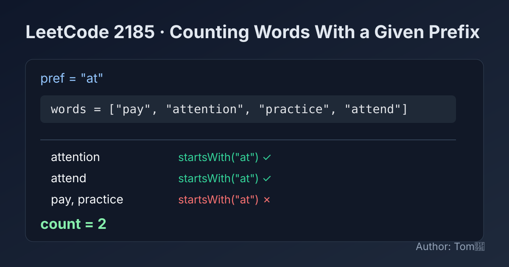

LeetCode 2185: Counting Words With a Given Prefix (Linear Prefix Match Counting)
LeetCode 2185StringPrefixCountingToday we solve LeetCode 2185 - Counting Words With a Given Prefix.
Source: https://leetcode.com/problems/counting-words-with-a-given-prefix/

English
Problem Summary
Given an array of strings words and a string pref, return how many strings in words start with pref.
Key Insight
This is a direct counting task. For each word, we only need a boolean check: does it start with pref? If yes, increment the answer.
Brute Force and Limitations
A very naive way is to compare characters manually for every word and stop at first mismatch. That works, but language built-ins like startsWith (or equivalent) are cleaner and less error-prone.
Optimal Algorithm Steps
1) Initialize count = 0.
2) Iterate all words.
3) If current word starts with pref, increment count.
4) Return count.
Complexity Analysis
Let n be number of words and m be length of pref.
Time: O(n * m) in worst case (prefix check per word).
Space: O(1) extra space.
Common Pitfalls
- Using substring search (contains) instead of prefix check.
- Forgetting that exact same string as pref should count as valid prefix match.
- Off-by-one mistakes when manually comparing characters.
Reference Implementations (Java / Go / C++ / Python / JavaScript)
class Solution {
public int prefixCount(String[] words, String pref) {
int count = 0;
for (String word : words) {
if (word.startsWith(pref)) {
count++;
}
}
return count;
}
}func prefixCount(words []string, pref string) int {
count := 0
for _, word := range words {
if len(word) >= len(pref) && word[:len(pref)] == pref {
count++
}
}
return count
}#include <string>
#include <vector>
using namespace std;
class Solution {
public:
int prefixCount(vector<string>& words, string pref) {
int count = 0;
for (const string& word : words) {
if (word.rfind(pref, 0) == 0) {
count++;
}
}
return count;
}
};from typing import List
class Solution:
def prefixCount(self, words: List[str], pref: str) -> int:
count = 0
for word in words:
if word.startswith(pref):
count += 1
return countvar prefixCount = function(words, pref) {
let count = 0;
for (const word of words) {
if (word.startsWith(pref)) {
count++;
}
}
return count;
};中文
题目概述
给定字符串数组 words 和字符串 pref，统计并返回 words 中以 pref 作为前缀的字符串个数。
核心思路
这是一个直接计数题。遍历每个字符串，只要它以前缀 pref 开头，就把答案加一。
暴力解法与不足
可以手写逐字符比较前缀，遇到不一致就停止。这种方法正确，但更推荐使用语言内置的前缀判断函数，可读性更高且更不容易出错。
最优算法步骤
1）初始化 count = 0。
2）遍历 words 中每个字符串。
3）若当前字符串以前缀 pref 开头，则 count++。
4）返回 count。
复杂度分析
设字符串数量为 n，前缀长度为 m。
时间复杂度：O(n * m)（最坏情况下每个字符串都要比较前 m 个字符）。
空间复杂度：O(1)（额外空间常数级）。
常见陷阱
- 把“前缀匹配”写成“子串包含（contains）”。
- 忽略“字符串等于 pref 也算前缀匹配”。
- 手写字符比较时出现下标越界或 off-by-one 错误。
多语言参考实现（Java / Go / C++ / Python / JavaScript）
class Solution {
public int prefixCount(String[] words, String pref) {
int count = 0;
for (String word : words) {
if (word.startsWith(pref)) {
count++;
}
}
return count;
}
}func prefixCount(words []string, pref string) int {
count := 0
for _, word := range words {
if len(word) >= len(pref) && word[:len(pref)] == pref {
count++
}
}
return count
}#include <string>
#include <vector>
using namespace std;
class Solution {
public:
int prefixCount(vector<string>& words, string pref) {
int count = 0;
for (const string& word : words) {
if (word.rfind(pref, 0) == 0) {
count++;
}
}
return count;
}
};from typing import List
class Solution:
def prefixCount(self, words: List[str], pref: str) -> int:
count = 0
for word in words:
if word.startswith(pref):
count += 1
return countvar prefixCount = function(words, pref) {
let count = 0;
for (const word of words) {
if (word.startsWith(pref)) {
count++;
}
}
return count;
};
Comments